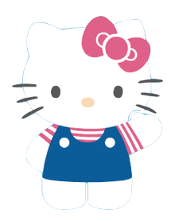

Es una marca y personaje ficticio producido por la compañía japonesa Sanrio y que ha sido durante mucho tiempo la más popular de esta compañía. Fue diseñada por Yuko Shimizu y el primer producto, se lanzó en Japón en 1974 y en los Estados Unidos en 1976.Tras el primer diseño realizado por Shimizu, Yuko Yamaguchi se convirtió en la diseñadora oficial de Hello Kitty y lleva más de veinte años diseñando todo tipo de productos, accesorios y complementos de Hello Kitty.
